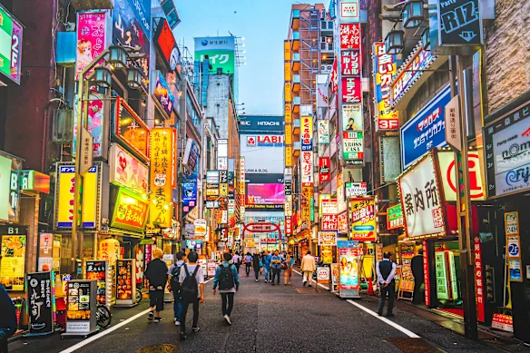

Mi viaje a Japón
Visitar Japón fue una experiencia que combinó asombro, descubrimiento y emoción en cada momento. Desde que llegué, me encontré rodeado de contrastes: ciudades llenas de luces y tecnología que conviven con templos antiguos y jardines tranquilos. Viajar en tren bala, caminar por calles llenas de historia y ver costumbres tan diferentes a las nuestras me hizo sentir que estaba en otro mundo.
Cada día fue una oportunidad para aprender algo nuevo, ya fuera sobre la cultura, la forma en la que las personas interactúan o las pequeñas tradiciones que hacen especial a este país. Japón me dejó recuerdos que llevaré conmigo para siempre y una enorme ganas de volver a explorarlo.
El Viaje
El vuelo fue largo, pero emocionante. Desde la ventanilla vi ciudades y paisajes que solo conocía por fotos. Entre películas, comidas del avión y alguna que otra cabeceada, las horas pasaron hasta que, finalmente, el capitán anunció el aterrizaje en Tokio. En ese momento entendí que estaba a punto de cumplir uno de mis grandes sueños.
La Comida
Uno de los mayores placeres del viaje fue la gastronomía. Probé sushi fresco en el mercado de Tsukiji, ramen humeante en pequeños locales escondidos y dulces tradicionales como el mochi. Cada plato no solo tenía un sabor increíble, sino que también estaba presentado con un cuidado y detalle que demostraban el respeto que los japoneses tienen por la comida. Comer en Japón fue una experiencia cultural tanto como culinaria.